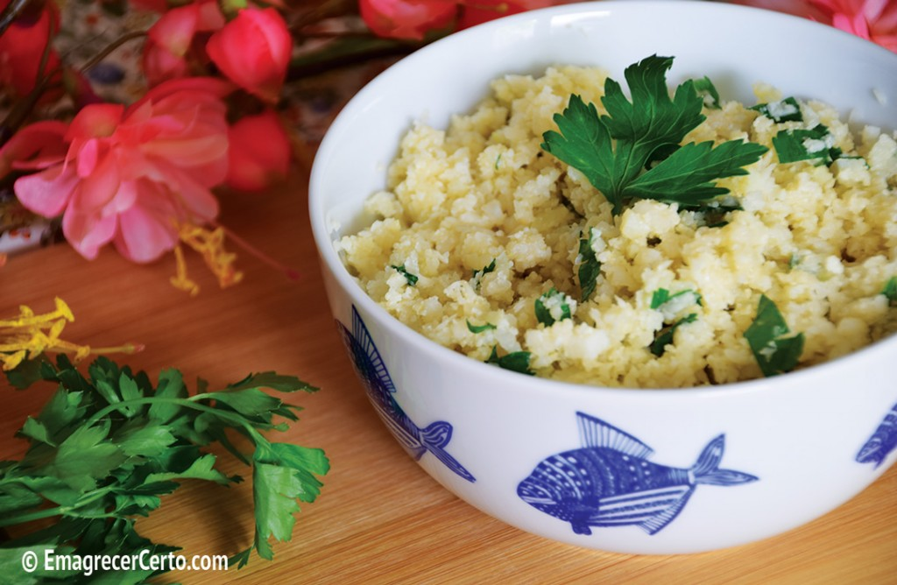
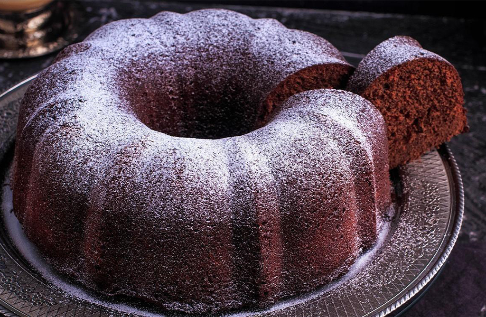
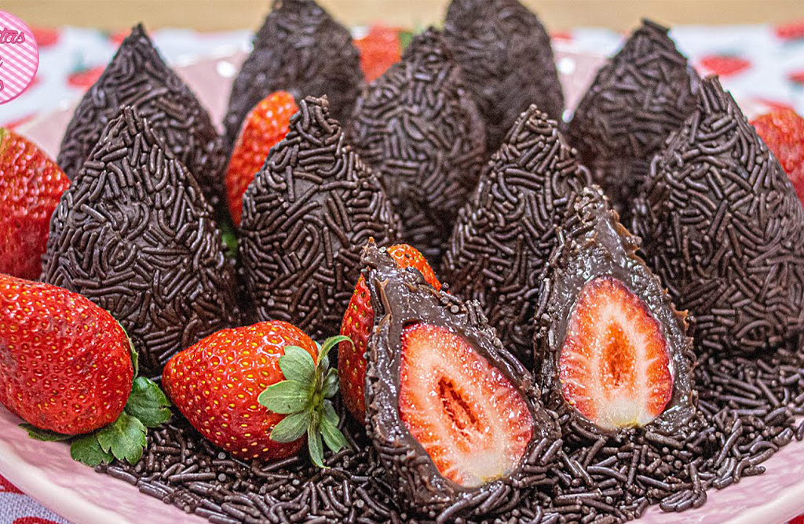

Arroz De Couve-Flor
- Arroz
- Couve-Flor
- Cebola
- Azeite De Oliva
Deixe a couve-flor picada. adicione os ingredientes e refogue bem. Adicione sal, tampe a panela e deixe cozinhar.

Bolo de café
- Farinha de trigo
- Açúcar
- café coado
- Chocolate em pó
- Ovos
Bata o açucar, as gemas e o café. Adicione farinha e Chocolate e Mexa bem. Bata as claras e junte à Mistura.

Coxinha de Brigadeiro
- Leite condensado
- Chocolate em Pó
- Manteiga
- Morango
- Chocolate Granulado
Junte o Leite condensado, chocolate em pó e Manteiga. Aqueça no fogo baixo. envolva os morangos e passe no granulado